ខេត្តនៅក្នុងប្រទេសកម្ពុជា
សូមស្វាគមន៏មកកាន់ខេត្តតាកែវ
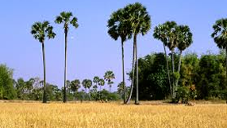
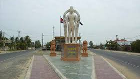
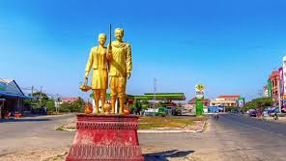
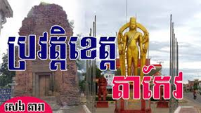
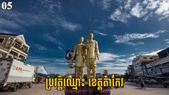
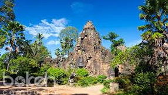
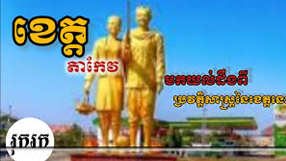
ដែនដីកំណើតនៃអារ្យធម៌ខ្មែរ
ខេត្តតាកែវត្រូវបានគេស្គាល់ថាជា "ដែនដីកំណើតនៃអារ្យធម៌ខ្មែរ" ឬ "លំយោលនៃអារ្យធម៌ខ្មែរ" ដោយសារតែទីតាំងភូមិសាស្ត្រនេះមានតួនាទីយ៉ាងសំខាន់ក្នុងការបង្កើត និងការរីកចម្រើននៃអាណាចក្រដំបូងគេរបស់ខ្មែរ។
១. សម័យបុរេប្រវត្តិសាស្ត្រ
ស្ថានីយ៍បុរាណវិទ្យា: ការរកឃើញវត្ថុបុរាណនៅតំបន់ អង្គរបុរី បានបង្ហាញថា តំបន់ខេត្តតាកែវមានមនុស្សរស់នៅតាំងពីយុគសម័យបុរេប្រវត្តិសាស្ត្រ ដូចជា យុគសម័យថ្មរំលីង និង យុគលោហៈ ដែលមានអាយុកាលរាប់ពាន់ឆ្នាំមុនគ្រិស្តសករាជ។
២. សម័យនគរវ្នំ (ហ្វូណន) (សតវត្សទី១ ដល់ទី៦)
រាជធានីដើម: គេជឿថាទីក្រុង អង្គរបុរី (ស្ថិតក្នុងស្រុកអង្គរបុរីបច្ចុប្បន្ន) គឺជាទីក្រុងស្នូល ឬជាទីក្រុងរបស់ អាណាចក្រនគរវ្នំ ដែលជាអាណាចក្រដ៏មានឥទ្ធិពល និងសម្បូររុងរឿងនៅអាស៊ីអាគ្នេយ៍ដំបូងគេ។
សំណង់ប្រវត្តិសាស្ត្រ: ប្រាសាទភ្នំដា ដែលកសាងឡើងក្នុងសតវត្សរ៍ទី៦ នៅស្រុកអង្គរបុរី គឺជាភស្តុតាងដ៏ចាស់បំផុតមួយនៃស្ថាបត្យកម្មឥដ្ឋនៅកម្ពុជា ដែលបង្ហាញពីការទទួលឥទ្ធិពលឥណ្ឌានៅសម័យនោះ។
៣. សម័យចេនឡា (សតវត្សទី៦ ដល់ទី៨)
ចេនឡាទឹក: ដោយសារតំបន់តាកែវជាតំបន់ដីទំនាបដែលមានបណ្តាញទន្លេ បឹង និងព្រែកច្រើន ដែលលិចលង់ដោយទឹកជន់នៅរដូវវស្សា ដូច្នេះក្នុងប្រវត្តិសាស្ត្រគេបានសំដៅដល់នគរដែលបន្តពីនគរវ្នំនៅតំបន់នេះថា "ចេនឡាទឹក"។
ប្រាសាទសំខាន់: ប្រាសាទបាយ៉ង់កោរ ដែលបានកសាងឡើងនៅលើកំពូលភ្នំបាយ៉ង់ ក្នុងស្រុកគិរីវង់នៅសតវត្សទី៧ ជាសក្ខីភាពមួយនៃសម័យចេនឡានេះ។
៤. សម័យអង្គរ និងក្រោយអង្គរ
ខេត្តតាកែវបានបន្តដើរតួនាទីយ៉ាងសំខាន់ ដោយបានបន្សល់ទុកនូវប្រាសាទល្បីៗជាច្រើនទៀត ដែលបានកសាងឡើងនៅក្នុងរចនាបថ និងសម័យកាលផ្សេងៗគ្នា ដូចជា៖
ប្រាសាទភ្នំជីសូរ: កសាងឡើងនៅសតវត្សទី១១ នៅលើកំពូលភ្នំជីសូរ ក្នុងស្រុកសំរោង ក្នុងរជ្ជកាលព្រះបាទសូរ្យវរ្ម័នទី១។
ប្រាសាទតាព្រហ្ម និង ប្រាសាទយាយពៅ៖ កសាងឡើងនៅចុងសតវត្សទី១២ និងដើមសតវត្សទី១៣ (រចនាបថបាយ័ន) ក្នុងរជ្ជកាលព្រះបាទជ័យវរ្ម័នទី៧ ស្ថិតនៅរមណីយដ្ឋានទន្លេបាទី ស្រុកបាទី។
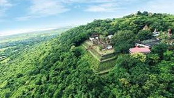

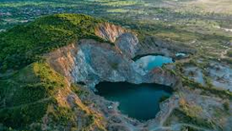
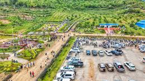
ខេត្តតាកែវជា "ដែនដីកំណើតនៃអារ្យធម៌ខ្មែរ" ដែលសំបូរទៅដោយរមណីយដ្ឋានប្រវត្តិសាស្ត្របុរាណ និងរមណីយដ្ឋានធម្មជាតិស្រស់ត្រកាលជាច្រើន។
ខាងក្រោមនេះគឺជារមណីយដ្ឋានទេសចរណ៍ល្បីៗ និងសំខាន់ៗដែលលោកអ្នកមិនគួររំលងនៅពេលទៅលេងខេត្តតាកែវ៖
១. តំបន់ទេសចរណ៍វប្បធម៌ និងប្រវត្តិសាស្ត្រ
ខេត្តតាកែវល្បីល្បាញដោយសារមានប្រាសាទបុរាណ និងស្ថានីយ៍បុរាណវិទ្យាជាច្រើនដែលបង្ហាញពីភាពរុងរឿងនៃអាណាចក្រនគរវ្នំ (ហ្វូណន) និងសម័យចេនឡា។
ឈ្មោះរមណីយដ្ឋាន លក្ខណៈពិសេស
ប្រាសាទភ្នំជីសូរ ជាប្រាសាទបុរាណដ៏ធំមួយ កសាងឡើងនៅសតវត្សទី១១ (រជ្ជកាលព្រះបាទសូរ្យវរ្ម័នទី១) នៅលើកំពូលភ្នំ។ ភ្ញៀវទេសចរអាចឡើងជណ្តើរប្រមាណ ៤៤០ កាំ ដើម្បីទស្សនាប្រាសាទ និងគយគន់ទេសភាពវាលស្រែដ៏ស្រស់ត្រកាលជុំវិញ។
រមណីយដ្ឋានទន្លេបាទី ជាទីកម្សាន្តធម្មជាតិដែលមានបឹងធំល្វឹងល្វើយ និងមានខ្ទមសម្រាប់អង្គុយលេង។ នៅតំបន់នេះក៏មានប្រាសាទបុរាណពីរផងដែរ គឺ ប្រាសាទតាព្រហ្ម និង ប្រាសាទយាយពៅ ដែលកសាងក្នុងសតវត្សទី១២-១៣ ក្នុងរចនាបថបាយ័ន។
ប្រាសាទភ្នំដា និងអង្គរបុរី ជាទីតាំងបុរាណវិទ្យាដ៏ចំណាស់បំផុតមួយនៅកម្ពុជា។ ប្រាសាទភ្នំដា កសាងឡើងនៅសតវត្សរ៍ទី៦ (សម័យនគរវ្នំ)។ តំបន់ អង្គរបុរី ត្រូវបានគេជឿថាជាទីក្រុងស្នូលរបស់អាណាចក្រនគរវ្នំ។ នៅទីនោះក៏មាន សារមន្ទីរអង្គរបុរី ដែលតម្កល់វត្ថុបុរាណជាច្រើន។
ប្រាសាទភ្នំបាយ៉ង់កោរ ជាប្រាសាទឥដ្ឋកសាងឡើងនៅសតវត្សទី៧ ស្ថិតនៅលើកំពូលភ្នំបាយ៉ង់ ស្រុកគិរីវង់ ដែលអាចឱ្យភ្ញៀវទស្សនាទេសភាពព្រៃភ្នំ និងចម្ការដំណាំរបស់ប្រជាពលរដ្ឋ។
ប្រាសាទនាងខ្មៅ ជាប្រាសាទឥដ្ឋមួយ កសាងនៅសតវត្សទី១០ ដែលនៅមិនឆ្ងាយពីប្រាសាទភ្នំជីសូរ។
២. រមណីយដ្ឋានធម្មជាតិ និងកែច្នៃ
ក្រៅពីសម្បត្តិវប្បធម៌ ខេត្តតាកែវក៏មានតំបន់ធម្មជាតិ និងកែច្នៃដ៏ទាក់ទាញផងដែរ៖
ភ្នំតាម៉ៅ (រមណីយដ្ឋានភ្នំតាម៉ៅ)៖ ជាតំបន់ទេសចរណ៍ចម្រុះដែលមាន សួនសត្វភ្នំតាម៉ៅ ដែលជាមជ្ឈមណ្ឌលសង្គ្រោះ និងថែរក្សាសត្វព្រៃដ៏ធំមួយនៅកម្ពុជា។ ក្រៅពីសួនសត្វ ក៏មានប្រាសាទបុរាណតូចៗនៅលើភ្នំផងដែរ។
ជ្រោះផ្អោក៖ ជាទឹកជ្រោះធម្មជាតិដ៏ពេញនិយមមួយស្ថិតក្នុងស្រុកគិរីវង់ ដែលហូរពីលើភ្នំកាត់ថ្មដាតូចធំ។ តំបន់នេះជាកន្លែងកម្សាន្តលេងទឹក និងសម្រាកលំហែកាយជាមួយម្ហូបអាហារបែបស្រុកស្រែ។
កំពូលពេជ្រ៖ ជាតំបន់ទេសចរណ៍បែបធម្មជាតិកែច្នៃ ដែលទាក់ទាញភ្ញៀវទេសចរទៅលេងកម្សាន្ត និងថតរូប។
ភ្នំខ្លែង៖ ជាតំបន់ទេសចរណ៍បែបវប្បធម៌ និងធម្មជាតិ។
ភ្នំពុទ្ធគិរី (ភ្នំព្រះច្រើន)៖ ជាវត្តអារាមដែលមានព្រះពុទ្ធបដិមាធំៗជាច្រើនតម្កល់នៅតាមចង្កេះភ្នំ ដែលជាទីសក្ការៈបូជា និងកន្លែងទស្សនាលំហែកាយ។
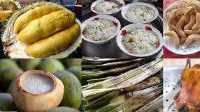
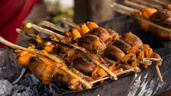
១. មុខម្ហូបល្បីប្រចាំខេត្ត
តាកែវមានមុខម្ហូបប្រចាំត្រកូលជាច្រើន ដែលល្បីល្បាញដោយសារតែរសជាតិដើម និងគ្រឿងផ្សំស្រស់ៗ៖
បង្កងទឹកសាប៖ ដោយសារតាកែវសំបូរទៅដោយបឹង ត្រពាំង និងទន្លេ បង្កងទឹកសាបនៅទីនេះល្បីថាមានឱជារសឆ្ងាញ់ពិសេស ទាំងយកទៅអាំង ស្ងោរ ឬធ្វើម្ហូបផ្សេងៗ។
ពងទាកូន៖ ពងទាកូននៅខេត្តតាកែវត្រូវបានភ្ញៀវជាតិ និងអន្តរជាតិទទួលស្គាល់ថាមានរសជាតិឆ្ងាញ់ប្លែក ហើយជាមុខម្ហូបមួយដែលល្បីល្បាញរហូតដល់ថ្នាក់អាជ្ញាធរធ្លាប់មានគម្រោងចង់សង់រូបសំណាកទៀតផង។
កង្កែបអាំង/ចៀន (Frog Food)៖ ម្ហូបកង្កែបចម្អិនតាមរបៀបផ្សេងៗ ដូចជា អាំង ចៀន ឬស្ងោរជូរ ជាអាហារដ៏ពេញនិយមមួយ ជាពិសេសនៅតាមបណ្តោយផ្លូវជាតិលេខ ៣ ក្នុងតំបន់ភ្នំតាម៉ៅ (ស្រុកបាទី)។
សម្លម្ជូរសាច់គោភូមិដើមផ្តៀក៖ ជាប្រភេទអាជីវកម្មលក្ខណៈគ្រួសារដ៏ល្បីមួយនៅតាកែវ ដែលភ្ញៀវទេសចរតែងតែឈប់ចូលទទួលទានដើម្បីភ្លក់រសជាតិសម្លរម្ជូរដើមរបស់ខ្មែរ។
២. អាហារសម្រន់ និងផលិតផលកសិកម្ម
នំគ្រក់ (Nom Krok)៖ ជាអាហារសម្រន់បែបប្រពៃណីខ្មែរ ដែលធ្វើពីម្សៅអង្ករលាយខ្ទិះដូង ហើយដុតក្នុងខ្ទះតូចៗ។ នំគ្រក់នៅតាកែវមានរសជាតិឈ្ងុយឆ្ងាញ់ ស្រួយពីក្រៅ ទន់ពីក្នុង ហើយគេច្រើនលក់តាមចិញ្ចើមផ្លូវ ឬនៅតាមផ្សារ។
ស្ករត្នោត៖ ខេត្តតាកែវ ជាខេត្តមួយដែលសំបូរដើមត្នោត ហើយជាពិសេសនៅ ស្រុកត្រាំកក់ ដែលជាតំបន់ផលិតស្ករត្នោតសុទ្ធល្អ មានរសជាតិផ្អែមឈ្ងុយឆ្ងាញ់ និងមានកេរ្តិ៍ឈ្មោះល្បីល្បាញ។
ភេសជ្ជៈត្នោត៖ ទឹកត្នោតជូរ (ស្រាឬទឹកត្នោត) និងទឹកត្នោតផ្អែមស្រស់ ត្រូវបានផលិតនៅស្ទើរគ្រប់ស្រុក ជាពិសេសស្រុកត្រាំកក់ ដែលអ្នកអាចរកជាវបាននៅតាមដងផ្លូវ ឬទីផ្សារនានា។
៣. ទីកន្លែងទទួលទានអាហារសំខាន់ៗ
នៅពេលទៅដល់តាកែវ អ្នកអាចស្វែងរកម្ហូបអាហារឆ្ងាញ់ៗនៅតាមទីតាំងដូចជា៖
ភោជនីយដ្ឋានតាមមាត់ទឹកទន្លេបាទី៖ ជាកន្លែងដែលមានខ្ទមតង់ទឹកសម្រាប់អង្គុយញ៉ាំអាហារបែបស្រុកស្រែ ដូចជា ត្រីអាំង សម្លរម្ជូរ ជាដើម។
ភោជនីយដ្ឋានស្ទឹងតាកែវ (Restaurant Stung Takeo)៖ ជាភោជនីយដ្ឋានដ៏ពេញនិយមមួយនៅក្នុងទីរួមខេត្ត ដែលសង់លើសសរខ្ពស់ៗ ហើយអាចឱ្យអ្នកគយគន់ទេសភាពប្រឡាយទឹកឆ្ពោះទៅអង្គរបុរី។
តំបន់ផ្លូវជាតិលេខ ៣ ក្បែរភ្នំតាម៉ៅ៖ សំបូរទៅដោយតូបលក់អាហារតាមផ្លូវ ជាពិសេសម្ហូបកង្កែប។
ផ្សារ និងផ្លូវក្បែរវិមានឯករាជ្យ៖ នៅពេលយប់តំបន់នេះក្លាយជាទីប្រជុំលក់អាហារសម្រន់ នំចំណី និងភេសជ្ជៈជាច្រើន។
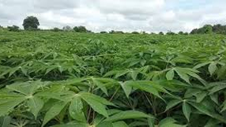
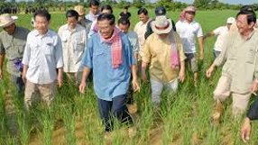
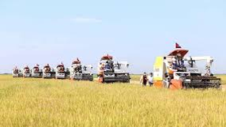
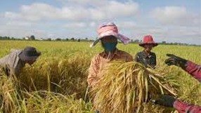
១. ទិដ្ឋភាពទូទៅនៃប្រជាជនខេត្តតាកែវ
ខេត្តតាកែវ គឺជាខេត្តមួយដែលមាន ដង់ស៊ីតេប្រជាជនខ្ពស់ ដោយសារតែទីតាំងភូមិសាស្ត្រល្អ និងនៅកៀកនឹងរាជធានីភ្នំពេញ។
ចំនួនប្រជាជន: ផ្អែកលើទិន្នន័យជំរឿនចុងក្រោយ ខេត្តតាកែវមានប្រជាជនជាង ៩០ ម៉ឺននាក់។
ពូជសាសន៍: ប្រជាជនភាគច្រើនជា ជនជាតិខ្មែរ។
សាសនា: ប្រជាជនភាគច្រើនគោរពប្រតិបត្តិ ព្រះពុទ្ធសាសនា (ថេរវាទ) ដែលឆ្លុះបញ្ចាំងតាមរយៈវត្តអារាម និងប្រាសាទបុរាណជាច្រើននៅក្នុងខេត្ត។
២. របៀបរស់នៅ និងមុខរបរសំខាន់ៗ
របៀបរស់នៅរបស់ប្រជាជនតាកែវមានលក្ខណៈប្លែកពីគេ ដោយសារតំបន់នេះជាដីល្បាប់មានប្រព័ន្ធធារាសាស្ត្រធម្មជាតិ និងបុរាណច្រើន ដែលផ្តល់លទ្ធភាពក្នុងការប្រកបមុខរបរដូចខាងក្រោម៖
ក. កសិកម្ម (មុខរបរស្នូល)
ដាំដុះដំណាំស្រូវ: តាកែវត្រូវបានគេស្គាល់ថាជា "ជង្រុកស្រូវ" មួយដ៏សំខាន់របស់កម្ពុជា។ ប្រជាជនភាគច្រើនប្រកបរបរធ្វើស្រែវស្សា និងស្រែប្រាំង។
ដំណាំត្នោត: តាកែវល្បីល្បាញខាងផលិត ស្ករត្នោត និង ទឹកត្នោត ដែលមានគុណភាពល្អ។ គេតែងឃើញដើមត្នោតដុះត្រៀបត្រាជុំវិញវាលស្រែ ដែលជាអត្តសញ្ញាណមួយរបស់ខេត្ត។
ដំណាំផ្សេងៗ: ក្រៅពីស្រូវ និងត្នោត ពួកគេក៏ដាំដំណាំផ្សេងៗទៀតដូចជា ដំណាំសួនច្បារ បន្លែ និងផ្លែឈើជាដើម។
ខ. នេសាទ និងចិញ្ចឹមសត្វ
នេសាទទឹកសាប: ដោយសារខេត្តមានបណ្តាញទន្លេ បឹង និងព្រែកច្រើន ដូចជាបឹងទន្លេបាទី និងតំបន់ជុំវិញអង្គរបុរី ប្រជាជនក៏ប្រកបរបរ នេសាទទឹកសាប (ត្រី បង្កង) និង ចិញ្ចឹមត្រី ផងដែរ។
ចិញ្ចឹមទា: តាកែវក៏ល្បីល្បាញខាង ចិញ្ចឹមទាយកស៊ុត និង ធ្វើពងទាកូន ដែលជាផ្នែកមួយនៃមុខម្ហូបល្បីៗប្រចាំខេត្ត។
គ. សិប្បកម្ម និងពាណិជ្ជកម្ម
តម្បាញសូត្រ និងហូល: សិប្បកម្មតម្បាញសូត្រ និងហូលក៏មានការរីកចម្រើននៅខេត្តតាកែវ ជាពិសេសការត្បាញហូលដែលមានលំនាំបុរាណ។
ពាណិជ្ជកម្មតាមព្រំដែន: ខេត្តតាកែវមានច្រកព្រំដែនអន្តរជាតិជាមួយប្រទេសវៀតណាម ដែលធ្វើឱ្យសកម្មភាពពាណិជ្ជកម្ម និងការផ្លាស់ប្តូរទំនិញមានភាពមមាញឹក។
៣. វប្បធម៌ និងទំនៀមទម្លាប់
របៀបរស់នៅប្រចាំថ្ងៃរបស់ប្រជាជនតាកែវនៅតែរក្សាបាននូវលក្ខណៈរស់នៅបែបជនបទខ្មែរ ដោយផ្តោតលើ៖
ការគោរពវប្បធម៌បុរាណ: ប្រជាជនមានការគោរពប្រតិបត្តិខ្ពស់ចំពោះប្រពៃណី និងជំនឿបុរាណ ដោយសារខេត្តនេះជាដែនដីមានប្រាសាទចំណាស់ៗតាំងពីសម័យនគរវ្នំ។
ភាពសាមញ្ញ និងរាក់ទាក់: ពួកគេរស់នៅដោយភាពសាមញ្ញ ជិតស្និទ្ធនឹងធម្មជាតិ និងមានទំនាក់ទំនងល្អជាមួយអ្នកភូមិ។ ជីវភាពរស់នៅរបស់ពួកគេត្រូវបានផ្សារភ្ជាប់យ៉ាងជ្រាលជ្រៅជាមួយ ដើមត្នោត វាលស្រែ និង ផ្លូវទឹក។
ការធ្វើចំណាកស្រុក: ដោយសារខេត្តតាកែវមានទីតាំងនៅជិតរាជធានីភ្នំពេញ ក៏មានប្រជាជនមួយចំនួនធ្វើដំណើរទៅមក ឬផ្លាស់ទីទៅរកការងារធ្វើនៅក្នុងទីក្រុងផងដែរ។
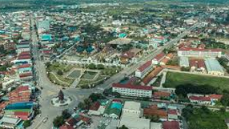
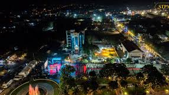
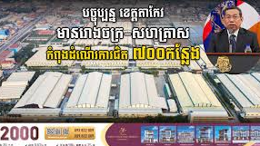
ទិដ្ឋភាពទូទៅនៃសេដ្ឋកិច្ច និងការអភិវឌ្ឍន៍ខេត្តតាកែវ
សេដ្ឋកិច្ចខេត្តតាកែវមានលក្ខណៈចម្រុះ ដោយផ្អែកជាចម្បងលើវិស័យ កសិកម្ម និង ទេសចរណ៍វប្បធម៌ ព្រមទាំងមានសក្តានុពលខ្លាំងក្នុងវិស័យ ពាណិជ្ជកម្ម និង ឧស្សាហកម្ម ដោយសារទីតាំងភូមិសាស្ត្រនៅជិតរាជធានីភ្នំពេញ និងជាប់ព្រំដែនវៀតណាម។
១. វិស័យសេដ្ឋកិច្ចស្នូល
ក. កសិកម្ម (វិស័យចម្បង)
ផលិតផលស្រូវ: កសិកម្មជាឆ្អឹងខ្នងរបស់ខេត្ត។ តាកែវត្រូវបានគេស្គាល់ថាជា "ជង្រុកស្រូវ" ដ៏សំខាន់មួយរបស់ប្រទេសកម្ពុជា ជាមួយនឹងប្រព័ន្ធធារាសាស្ត្រធម្មជាតិ និងបុរាណដែលជួយដល់ការដាំដុះស្រូវប្រាំង និងស្រូវវស្សា។
ដំណាំឧស្សាហកម្ម: ដំណាំផ្សេងទៀតដូចជា ដំឡូងមី និងដំណាំរួមផ្សំផ្សេងៗក៏មានដាំដុះយ៉ាងទូលំទូលាយដែរ។
ផលិតផលត្នោត: តាកែវមានកេរ្តិ៍ឈ្មោះល្បីល្បាញលើការផលិត ស្ករត្នោត ដែលមានគុណភាពខ្ពស់ ជាផលិតផលដ៏មានសក្តានុពលសម្រាប់ទីផ្សារក្នុងស្រុក និងនាំចេញ។
ផលនេសាទ: ការនេសាទ និងការចិញ្ចឹមត្រី/បង្កងទឹកសាបក៏ជាមុខរបរសំខាន់ ដោយសារខេត្តនេះសំបូរដោយបឹង និងបណ្តាញទឹក។
ខ. ឧស្សាហកម្ម និងពាណិជ្ជកម្ម
ពាណិជ្ជកម្មតាមព្រំដែន: ខេត្តតាកែវមាន ច្រកព្រំដែនអន្តរជាតិ ជាមួយប្រទេសវៀតណាម ដែលជាច្រកដ៏សំខាន់សម្រាប់នាំចេញ-នាំចូលទំនិញ និងជំរុញសកម្មភាពសេដ្ឋកិច្ចក្នុងតំបន់។
រោងចក្រ និងសហគ្រាស: ដោយសារនៅជិតរាជធានីភ្នំពេញ និងមានហេដ្ឋារចនាសម្ព័ន្ធផ្លូវជាតិល្អ (ផ្លូវជាតិលេខ ២ និងលេខ ៣) ខេត្តនេះបានចាប់ផ្តើមទាក់ទាញការវិនិយោគរោងចក្រកាត់ដេរ និងសហគ្រាសខ្នាតតូច-មធ្យមជាច្រើន។
សិប្បកម្ម: សិប្បកម្មតម្បាញសូត្រ ហូល និងស្បៃ ក៏មានការគាំទ្រ និងជំរុញឱ្យមានការអភិវឌ្ឍជាបន្តបន្ទាប់។
គ. ទេសចរណ៍
ទេសចរណ៍វប្បធម៌ប្រវត្តិសាស្ត្រ: វិស័យទេសចរណ៍ដើរតួនាទីយ៉ាងសំខាន់ក្នុងការបង្កើតចំណូល ដោយសារខេត្តមានប្រាសាទបុរាណល្បីៗតាំងពីសម័យនគរវ្នំ និងចេនឡា ដូចជា ភ្នំជីសូរ ភ្នំដា និង ទន្លេបាទី។
ទេសចរណ៍ធម្មជាតិ: រមណីយដ្ឋានធម្មជាតិដូចជា ភ្នំតាម៉ៅ (សួនសត្វ) និង ជ្រោះផ្អោក ទាក់ទាញភ្ញៀវទេសចរជាពិសេសនៅចុងសប្តាហ៍ ឬថ្ងៃបុណ្យ។
២. ទិសដៅ និងការអភិវឌ្ឍន៍
រដ្ឋបាលខេត្តបានផ្តោតលើការអភិវឌ្ឍន៍លើចំណុចសំខាន់ៗមួយចំនួន៖
ការកែលម្អហេដ្ឋារចនាសម្ព័ន្ធ: ពង្រឹង និងពង្រីកបណ្តាញផ្លូវថ្នល់ ផ្លូវលំជនបទ និងប្រព័ន្ធធារាសាស្ត្រ ដើម្បីសម្រួលដល់ការដឹកជញ្ជូនកសិផល និងការធ្វើដំណើររបស់ប្រជាពលរដ្ឋ។
ការជំរុញកសិផល: លើកកម្ពស់គុណភាព និងទិន្នផលកសិកម្ម ជាពិសេសស្រូវ និងបន្លែ ដោយប្រើប្រាស់បច្ចេកទេសទំនើប និងការដាំដុះតាមកិច្ចសន្យា។
ការពង្រឹងតំបន់សេដ្ឋកិច្ច: បន្តទាក់ទាញការវិនិយោគបរទេសទៅលើការបង្កើតរោងចក្រ និងតំបន់សេដ្ឋកិច្ចពិសេស ដើម្បីបង្កើតការងារ និងបង្កើនចំណូលជូនប្រជាជន។
ការអភិវឌ្ឍន៍ទេសចរណ៍: បង្កើនការផ្សព្វផ្សាយ និងអភិរក្សរមណីយដ្ឋានប្រវត្តិសាស្ត្រ និងធម្មជាតិដែលមានស្រាប់ ព្រមទាំងពង្រីកសេវាកម្មទេសចរណ៍នៅតាមសហគមន៍។